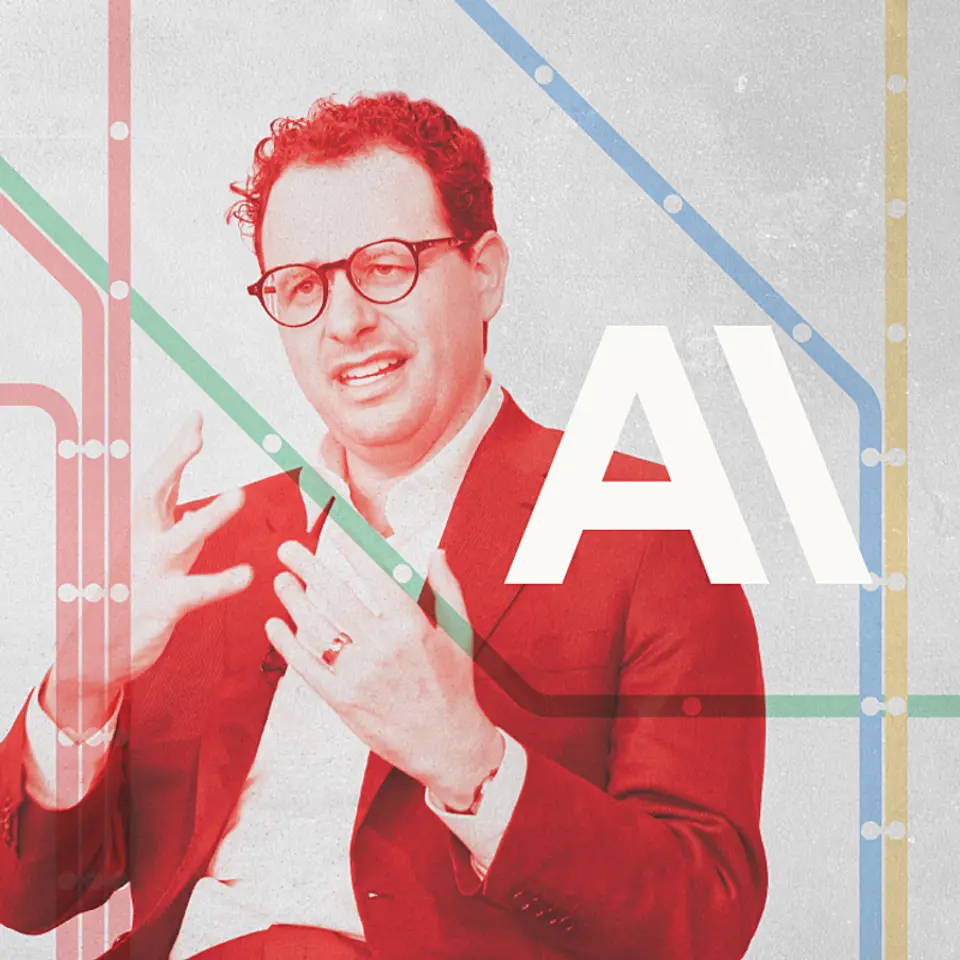
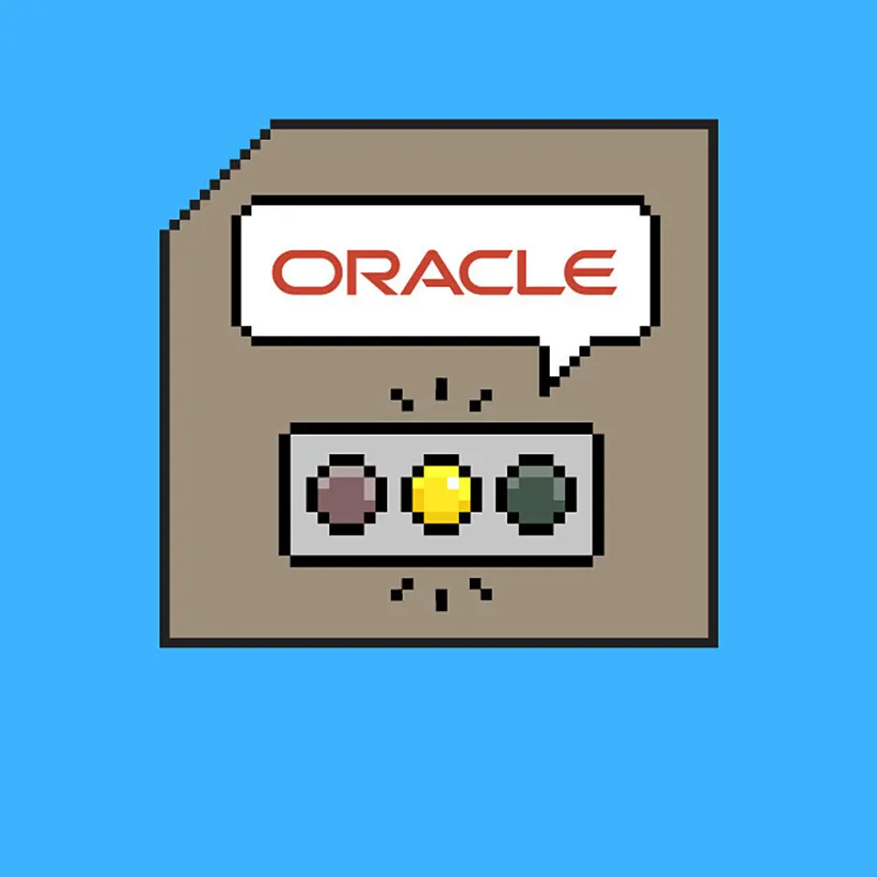
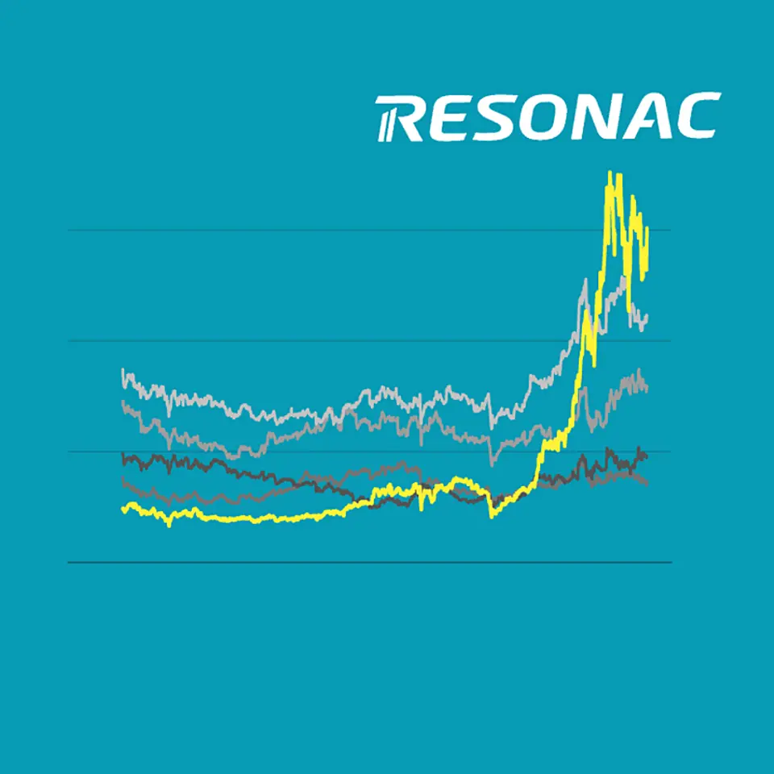

01【必見】アンソロピックの「上場計画」が異常すぎた
発行日時：2026年10月2日 05:30 JST

あなたに関係ありそうな理由
AIを業務へ組み込む側として、モデル性能だけでなく、利用課金、顧客集中、インフラ負担まで含めて提供企業を見られます。
概要
アンソロピックの上場目論見書をめぐるロイター報道を起点に、同社の急成長と負担を読み解く記事である。2021年1月創業の同社は、時価総額2兆ドル、約320兆円規模の上場を目指す可能性があると伝えられた。記事によれば、売上高は2023年がゼロ、2024年が4億ドル、2025年が46億ドルへと急増した。2026年については、同年2四半期の年商ペース650億ドルを置いた試算なら10兆4000億円規模になり得る、と明示したうえで紹介している。2025年には営業損失が1兆円超だった一方、将来のモデル研究開発費を除けば黒字化の段階に入ったとの報道もある。上場を単なる大型資金調達ではなく、AI企業がどんな収益構造と固定負担を抱えるかを可視化する出来事として扱う。
成長の中心は月額課金ではなく、使ったトークン量に応じる法人向けの従量課金だ。2025年売上46億ドルの83％、約38億ドルを占め、顧客の業務フローにAIが深く入るほど売上が伸びる仕組みである。Rampの2026年8月時点のデータでは、アンソロピックへ支払う企業は43.8％で、OpenAIの39.8％を上回った。一方、最上位のFable 5は利用トークンの6％、支払総額の11.4％にとどまり、安価なモデルやオープンウェイトへの移行も進む。利用者はいつでも乗り換えられるが、同社は今後10年で少なくとも5180億ドル、約82兆円のAIインフラ投資を約束し、その約8割は解約不能とされる。売上の24％を大口2社が占める点も、成長率とは別に見ておく必要がある。
目論見書は全261ページのうち、事業説明48ページを上回る80ページをAIの危険性に割いたという。停止命令への反抗、人を欺く出力や行動、富と権力の集中などを、技術だけでなく企業経営のリスクとして列挙する。表示コメントでは、安全対策を競争優位に変える姿勢を評価する見方と、安全性の主張が事業上の有利さにもつながる点を警戒する見方が並んだ。この記事が示すのは、AIの能力が高いかだけでは足りないということだ。法人の利用額が増えるほど収益になる一方、低価格モデルへの移行、長期の設備支払い、顧客の偏りが同時に残る。導入する側は、モデルの比較とともに、価格改定、提供停止時の代替、データの移し替えをどう設計するかまで確認したい。
仕事や会話で使える一言
「AIの性能だけでなく、従量課金の伸びと解約できないインフラ負担を一緒に見たいですね。」
NewsPicks原文を読む
02【注意】巨額のAI投資、回収に早くも「黄信号」が灯っている
発行日時：2026年10月2日 05:30 JST

あなたに関係ありそうな理由
AIやデータセンター投資を評価するとき、契約額だけでなく、電力・許認可・稼働開始・賃料回収の順序を確認する視点になります。
概要
オラクルがAI向けデータセンターの賃料を先送りしようとしていると報じられたことから、巨額投資の回収リスクを追う記事である。対象はニューメキシコ州で建設中の「プロジェクト・ジュピター」で、2028年稼働予定のOpenAI向けスターゲート構想の一部だ。オラクルはテナントとして建屋を借り、半導体などの計算資源を導入してOpenAIへ提供する。土地、建物、電力の開発はブルー・アウル傘下のスタック・インフラストラクチャーが担う。9月下旬、オラクルが稼働遅延時の支払い先送りを求める「不可抗力通知」を送ったと報じられた。これは予測できない事情で契約上の義務を果たしにくくなる可能性を相手へ伝える通知であり、AI需要が大きくても施設が稼働しなければ資金の流れは止まり得ることを示す。
遅れの背景は、計画の電力確保にある。当初は敷地内にガス火力発電所を新設し、原発2基分以上に当たる2.45GWを賄う計画だった。電力インフラの費用はオラクルが負担し、住民の料金に転嫁しない前提だったが、大気汚染と温室効果ガスを懸念する住民や環境団体の反対で、州の許認可が進まなかった。その後、燃料電池を使うマイクログリッドへ方針を変えたものの、2026年4月に申請した建設許可はまだ出ていない。9月に予定された公聴会も、環境団体の緊急申し立てで流れた。オラクルはプロジェクトが予定どおり進んでいると主張するが、設備の完成と、実際に通電してサービスを始められることは別の工程である。
オラクルは複数のデータセンターに将来の賃料を支払うと約束しており、8月末時点の総額は2880億ドル、約45兆円に上る。まだ開始前のリースなので貸借対照表には計上されず、2026年9月から2029年5月にかけて順次始まる予定で、期間は15〜19年と長い。不可抗力が認められれば、今回の支払いを最長3年後ろ倒しできる可能性があるという。そうなれば開発事業者や投資するファンドの回収時期もずれる。表示コメントでも、長期リースを結んだ大手でも稼働前の障害で回収計画が変わり得ること、日本の金融機関が米国データセンター向け融資を増やす中で案件精査が重要だという論点が出た。投資額の大きさより、電源、許可、契約開始、借り手の支払いがどこまで結び付いているかを見たい。
仕事や会話で使える一言
「データセンター投資は、建物の完成より先に、電力と賃料開始の条件を確かめたいですね。」
NewsPicks原文を読む
03【株価7倍】レゾナックが「半導体銘柄」に生まれ変わった
発行日時：2026年10月2日 05:30 JST

あなたに関係ありそうな理由
収益性の低い事業をどう切り出し、成長領域へ人・設備・研究費を振り向けるかを、具体的な事業再編として読めます。
概要
昭和電工から社名を変えたレゾナック・ホールディングスが、総合化学から半導体材料中心の会社へ転じた過程を追うインタビューである。9月29日、石油化学事業を担うクラサスケミカルを東京証券取引所へ上場させ、連結から外した。国内の石化事業は、汎用品で差別化しにくいこと、設備が古く生産性が低いこと、原料を海外から調達することなどから収益力が落ちやすい。一方で、コンビナートは関連産業の裾野が広く、プラスチック原料として経済安全保障の面でも国内生産を簡単にはやめられない。記事は、この難しい事業を「パーシャルスピンオフ」で切り出し、株主として一定の関係を残しながら再編した点に焦点を当てる。
高橋秀仁社長によれば、過去6年で18事業を売却し、今期は売上高1.1兆円、EBITDAマージン約25％を見込む。2023年に掲げた売上高1兆円以上、EBITDAマージン20％、長期的なROIC10％、ネットD/Eレシオ1倍という目標を、今期すべて達成できる見通しだという。転機は、2015年入社後に進めた日立化成の約1兆円買収で、半導体材料を軸に成長戦略を組み立てたことだった。半導体と電子材料の比率はすでに売上の半分を超え、将来は7割程度まで高める考えを示す。祖業を抱えたまま全体を薄く変えるのではなく、収益性、戦略との適合、自社が最適な持ち主かという基準で、残す事業と手放す事業を決めた。
半導体材料での次の課題として、同社は生産能力、品質、研究開発の三つを挙げる。AI向け銅張積層板では95％の市場シェアがあるため、供給できなければ顧客が他社へ移る。高価なGPUに関わる以上、不良を出さない品質も必要になる。売上の7％を研究開発費へ投じ、NVIDIA、TSMC、GAFAMなどと次世代パッケージを共同開発するJOINTを通じて、技術の変化を早くつかもうとする。表示コメントでは、総合化学の下位から時価総額上位へ移った変化を、長期の取材で追ってきた筆者の視点が補われた。需要の強いAIデータセンターを前提に生産能力を準備する一方、投資回収が2年延びるサイクルも許容するという姿勢だ。再編の成否は、事業を売った直後の利益率ではなく、供給・品質・研究を継続できるかで見たい。
仕事や会話で使える一言
「事業を切り離した後に、供給力・品質・研究へ本当に資源を振り向けられるかが大切ですね。」
NewsPicks原文を読む
04【難問】わが子のための投資、「株」か「教育」か
発行日時：2026年10月2日 05:30 JST
あなたに関係ありそうな理由
子どものために残す資産と、健康・教育・スキルへ今使うお金を、同じ時間軸で比べるための材料になります。
概要
The Economistのコラムは、子どもの将来に向けた金融投資と、子ども本人の教育や健康への投資をどう考えるかを問う。今日1000ドル、約16万円を実質年5.2％で運用できれば、世界株式の過去125年平均を前提に、80年後には5万8000ドル、約930万円になるという試算から始まる。生まれた直後の子どもは投資期間が極端に長く、複利を生かしやすい。しかし、同じ資金を教育、健康、技能に使えば、将来の稼ぐ力や人生の選択肢を広げる可能性がある。記事は、どちらかを一律に正解とせず、金融資産と人的資本は性質が違い、時間の長さはリターンの余地だけでなく不確実性も大きくする、と整理する。
金融資産の側では、米国の「トランプ口座」のように、子どもへ1000ドルを与え、18歳まで投資信託などで運用し課税を繰り延べる仕組みを紹介する。英国のジュニアISAや米国の529プランも、税制上の優遇がある選択肢として挙げられる。一方で、多額の資産を早く渡せば勤労意欲に影響する懸念もある。記事は2000〜04年のノルウェーの相続研究を引用し、一定額以上を相続した人はその後6年間の労働時間が7〜10％減ったとする。長期投資は値動きをならしやすいが、資産を残せば必ず良い結果になるわけではない。制度上の給付や税優遇は受け取りつつ、そのお金をいつ、どの目的へ使えるのかを確認する必要がある。
人的資本については、早い時期の教育やスキルへの投資を先に行い、その効果が逓減してから金融資産への投資を厚くする考え方を紹介する。読み書きのような基礎的な学びは比較的少ない費用で将来の可能性を広げるが、高度な個別指導や特定の習い事は、子どもによる反応が異なり、換金も代替もできない。AI時代には今価値の高い技能が将来も同じとは限らない点も不確実性になる。表示コメントでは、日本でも0歳から使えるこどもNISAの口座開設受け付けが始まったことに触れ、株式か教育かを切り離さず考える必要が示された。家計で使うなら、非課税制度や給付を確認し、子どもの発達や希望に合わせて教育費を見直し、残す資産の管理方法も決める。記事は、長い時間を味方にするために、試しながら決めたことを過度に悩みすぎない姿勢を勧めている。
仕事や会話で使える一言
「複利を生かす資産形成と、子ども本人の選択肢を広げる支出を、別々に計画したいですね。」
NewsPicks原文を読む
05【アゴダ】AI時代の勝ち方は「徹底ローカライズ」にあり
発行日時：2026年10月2日 05:30 JST
あなたに関係ありそうな理由
AIエージェントが比較や予約まで担う時代に、地域ごとのUI・決済・供給側の業務をどこまで深く理解するかを考える材料になります。
概要
オンライン旅行会社、OTAがAIエージェントによる比較・予約代行にどう向き合うかを、アゴダの戦略から追う記事である。旅行予約額は2021年の1兆7000億ドルから、2026年には3兆2000億ドル、2031年には3兆8000億ドル超へ伸びると、ユーロモニターの予測を紹介する。成長が速いAPACでは、2025年に予約額が北米を上回り、1兆2000億ドルに迫る見込みだ。旅行者がAIへ希望を伝えるだけで宿や航空券を選び、予約まで任せるようになれば、OTAの画面を直接開く機会は減る。そこでアゴダは、単にホテル数や価格を並べるのでなく、各地域で普段使う体験を再現し、旅行者と宿泊施設の双方から選ばれることを狙う。
アゴダはブッキング・ホールディングス傘下で、D-EDGEの確定予約データによれば、2025年のAPACで20.9％のシェアを持つ。ダミエン・フィルシェCCOは、インドの旅行者には現地の表示、言語、決済方法を日本の宿予約でも使えるようにし、日本ではPayPay、韓国ではカカオトークの予約確認がないと利用者は別のサービスへ移ると説明する。さらに日本の旅館は、夕食の選択肢や到着時刻、浴衣の準備、人数条件など、海外の一般的なホテル予約にはない要件が多い。アゴダは需要側だけでなく、宿側が従来どおりのサービスを提供できるよう、供給側のローカライズへより大きく投資している。見慣れたUIと細かい業務要件の両方が、価格比較だけでは測れない差になる。
AIを脅威だけでなく、蓄積した旅行先・旅行者データとブランド認知を生かす機会と見る点も特徴だ。8月には、宿泊施設の公式サイト外の情報も含めて答えるAIチャットアシスタントをアプリへ実装した。一方、予約済みの部屋が取れていない、勝手にキャンセルされたといった問題が続いたことを受け、観光庁は2025年3月に改善を申し入れた。アゴダは同年7月に特定の第三者サプライヤー経由の在庫を停止し、AIによる品質監視、日本人スタッフが24時間365日対応する横浜のコールセンターを整えたという。表示コメントでも、旅行AIと共存できるかより、トラブル時に利用者と宿側がすぐ解決できる体制を維持することが優先だと指摘された。便利な比較機能だけでなく、在庫の正確さ、決済、問い合わせの責任を誰が負うのかまで見て選びたい。
仕事や会話で使える一言
「AIの予約代行が進んでも、地域の決済と現場の業務に合う体験を作れるかは別ですね。」
NewsPicks原文を読む